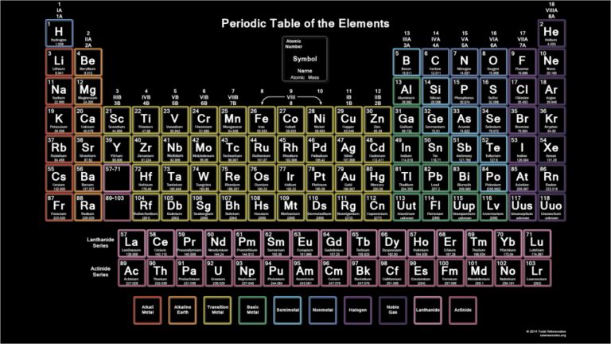
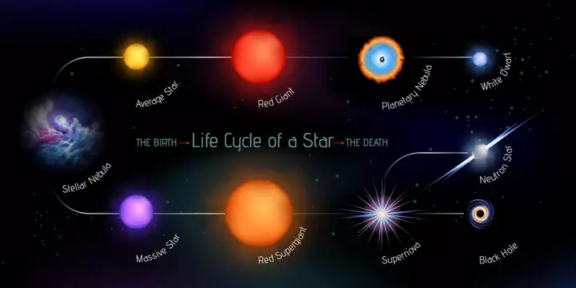

| Home |
| About |
| Blog |

| Margaret Burbidge: Made of Starstuff |
4 May 2020 |

|
Figure 1: Margaret Burbidge. Image courtesy American Institute of Physics/Science Photo Library |
|
“We are made of starstuff.” These are words we’ve probably all heard at one point or another, made famous by astronomer Carl Sagan in his TV series and book Cosmos: A Personal Voyage. What Sagan is referring to here is our scientific understanding that the elements that make up humans, plants, animals, and all the living things on Earth were created in the cores of distant stars. But how do the stars actually create these elements, and who figured out this incredible picture of how the stuff that makes up all of us came to be? I have known about astronomer Dr. Margaret Burbidge for years. I walk past her portrait every time I visit the Green Bank Observatory; the laboratory there has a wall displaying photographs of all of the scientists who have given the prestigious Jansky Lecture at the observatory over the past several decades, and she is featured alongside the other accomplished astronomers. But I didn’t realize, until recently, that she (along with a small team of her colleagues, including astronomers Fred Hoyle, William Fowler, and her husband Geoff Burbidge) was responsible for making discoveries that changed our way of looking at our origins: Burbidge’s research allowed us to understand how it is that stars create the elements that make us. Burbidge was a formidable observational astronomer, both extremely talented and unflappable at the telescope. As WWII raged across Europe, Burbidge, having just completed her PhD, worked on her research at the London Observatory, staying up night after night to collect her observations. One summer evening in 1944 two bombs exploded at not too great a distance while she was on an observing run. In her logbook, Burbidge, with a steady hand and matter-of-fact prose, made note of the fact that the explosions caused her telescope to become misaligned – but not to worry, because she was able to reposition it and then went right back to her observing. It was with similar steely determination that Burbidge led the Burbidge / Fowler / Hoyle team in carrying out the research that would form the basis of a trailblazing 1957 paper titled “Synthesis of Elements in Stars,” (often referred to as the “B2FH” paper in reference to the authors’ last names), which is still a golden standard in astronomy. All while pregnant with her daughter Sarah, Burbidge conducted numerous observations to measure abundances of elements in stars to provide the team with experimental evidence to verify their hypotheses about how stars synthesize elements via the process of nucleosynthesis, and she worked hard to compile all of her and her collaborators’ results into the famed 108-page B2FH paper. So what is our understanding of nucleosynthesis, or the formation of elements in stars, courtesy of Burbidge and her team? To understand the process, let’s walk through how stars’ lifecycles work. If a star is close to or less than about 1.5 times the mass of our Sun, it spends the first part of its life fusing hydrogen into helium via the proton-proton decay chain reaction. The proton-proton reaction occurs when two protons collide and stick together; in some cases, one proton will decay into a neutron, an electron, and a small, uncharged particle called a neutrino. Then, you’re left with a deuterium, or heavy hydrogen, nucleus – a nucleus with one proton and one neutron. Deuterium atoms can then fuse with other free protons in the star in a reaction that produces helium with one neutron and an energetic gamma ray as a by-product. An interesting side effect of this process is that the gamma rays produced in these reactions travel through a slow and tortuous path to the star’s surface – by the time they reach the outer layer of the star, they have lost so much energy that they emerge as light – so that is why stars shine! More massive stars fuse hydrogen via a process called the CNO (carbon-nitrogen-oxygen) cycle, which, through a series of complex reactions, produces helium as a result of reactions between protons and carbon, nitrogen, or oxygen atoms. |
 |
Figure 2: The Periodic Table, the guidebook to all elements in the universe. Image courtesy Science Notes. |
|
Fusing hydrogen into helium forms the first phase of nucleosynthesis for stars, but after stars have fused most of their hydrogen into helium, they become hotter and denser. Once a star’s hydrogen fuel begins to run low, it expands into a red giant. In the red giant phase, low-mass stars fuse helium nuclei into successively larger elements – up to carbon and oxygen – and higher-mass stars form these elements in addition to heavier elements all the way up to iron.
It is at this point that the lifecycles of the two different types of stars diverge. The low-mass stars blow off their outer layers and become white dwarfs, which are no longer capable of fusion and spend the rest of their lives slowly cooling off, and fading away. Stars more than a few times the mass of the Sun, after burning through fusion processes as a red giant, go on to a different stage of evolution: a supernova explosion. This cataclysmic event occurs because fusing iron consumes energy rather than releasing it (as other fusion processes do), and thus the star runs out of fuel and collapses in on itself. It is during the immense pressure of a supernova explosion that very heavy elements, like copper, gold, uranium, etc. can form. After the supernova explosion has occurred, depending on their mass, the stars become either neutron stars (also known as pulsars), which are made up entirely of neutron matter and are unimaginably dense, or they become black holes, objects so massive and dense that not even light can escape their gravitational grasp. |
 |
Figure 3: The lifecycle of stars. Image courtesy: Marusya Chaika / Shutterstock. |
|
When stars die, the elements they forged in their cores are eventually dispersed out into space with the shedding of red giant layers and with the dispersion of materials expelled in the supernova event. And clouds of these elementary materials – the ashes of old stars – become nebulae, or stellar nurseries, that form new stars or planets, like our Earth.
And we know this beautiful story of how the stuff that makes us came to be because of a determined astronomer with a passion for observing. Burbidge’s story didn’t stop with her groundbreaking work on how stars make elements; she went on to led a long and distinguished career as an astronomer marked not only by her research prowess but by her activism. She was an advocate for women in astronomy, inspiring generations of women through her example, and making institutional change through her work as first female president of the American Astronomical Society. Margaret Burbidge passed away this April at age 100, and it is important that we never forget the profound impact she has had on the field of astronomy, and the incredible new perspective she gave us on our place in the Universe. With her life, her research, and her advocacy, Burbidge exemplified the sentiment that as Earthlings, we are truly in this together – we are all made of stardust, after all. |
General Sources:
Previous post: Hydrogen in Space: The Backbone of Radio Astronomy |